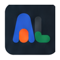

Design system and frontend wireframes for memory that shows its work.
A production-facing system derived from design/tokens.json, the live MCP database shape, and the current dashboard routes. The aesthetic is calm operational clarity: white surfaces, cream workspace, blue navigation, gold review focus, orange insight energy.
Brand guideline reading
Rules extracted from the supplied Allura brand board. These are now the governing creative constraints for the frontend mockup.
Memory that shows its work
Every product screen should make evidence, source, confidence, and trace visible.
Memory + Intelligence
Help people capture, organize, and understand what matters.
Connection + Community
Connect people, ideas, and cultures to build stronger communities.
Clarity + Impact
Transform complexity into clarity and drive meaningful impact.
- Clarity over complexity
- Empathy in design
- Inclusive by default
- Purposeful technology
- Built for communities
Usage rules
The brand board makes these rules explicit. They should become QA checks before handoff.
Logo minimums
Wordmark minimum width: 32px. App icon / monogram minimum width: 24px.
Clear space: X = height of the “l” in the wordmark.
Do
✓ Use color ratios
✓ Maintain clear hierarchy
✓ Write human-first copy
✓ Design for all devices
Don’t
✕ Use colors outside the palette
✕ Crowd the interface
✕ Use jargon or complex terms
✕ Ignore mobile experience
Incorrect logo usage
Never recolor, stretch, rotate, add effects, or alter the lockup. Use approved files only.
Keep approved palette variants.
Preserve original proportions.
Keep baseline horizontal.
No shadows, glows, bevels, or filters.
Logo system
Approved logo assets extracted from clients/allura memory/ChatGPT Image Apr 26, 2026, 02_23_35 AM.png. Use the correct asset for the context; do not recreate the logo in text.
.png)

Semantic color tokens
Canonical values from design/tokens.json. Raw hex is shown for handoff only; implementation should consume semantic names.
#1D4ED8#FF5A2E#157A4A#C89B3C#0F1115#F6F4EF#FFFFFF#F3F4F6Typography, spacing, radius, shadow
IBM Plex Sans is the primary brand typeface. IBM Plex Mono is reserved for logs and machine-readable evidence.
Primary font for headings, body, controls, nav, and cards.
| H1 | Bold | 56px / 1.1 |
| H2 | Semibold | 40px / 1.2 |
| H3 | Semibold | 32px / 1.25 |
| H4 | Medium | 24px / 1.3 |
| Body | Regular | 16px / 1.6 |
| Caption | Regular | 14px / 1.6 |
| Overline | Medium | 12px / 1.5 |
Raw logs, evidence payloads, IDs, timestamps.
4px base unit: xs 4, sm 8, md 12, lg 16, xl 24, 2xl 32.
Core components
These match the existing component-library specification and add missing runtime patterns.
Buttons
Search + filters
Outcome Insight Strong ModerateCards + rows
MCP server auth failed
Connected to 8 memories · Insight generated
User dropped off at onboarding step 2
Project: Allura Web · 5 connected memories
Toast, modal, skeleton
The active evidence tab is ready to paste.
Interactive wireframe set
Use the screen buttons to preview the 8 core frontend views: Overview, Memory Feed, Graph View, Insight Review, Evidence, Agents, Projects, Settings.
System states
State language follows the copy pack: direct, specific, and never hype-driven.
Empty
Nothing pending.
All proposed insights have been handled — approved, rejected, or superseded.
Error
Graph database offline.
The Neo4j instance that powers the memory graph is not responding.
Loading
Mapping the graph…
Engineering handoff
Concrete next steps for wiring this into the live app.
Implement token bridge
Keep design/tokens.json canonical. Generate CSS variables for src/styles/presets/allura.css and avoid raw hex in components.
Route mapping
Map dashboard routes to the 8 screens: /dashboard, /memories, /graph, /insights, /evidence/[id], /agents, /projects, /settings.
Data contract
Use query/mapper boundaries. Components should consume UI contracts, not raw PostgreSQL or Neo4j transport shapes.
Quality gate
Check: no mock data at runtime, all reads include group_id, active tabs use gold, sidebar active uses blue, IBM Plex Sans only.